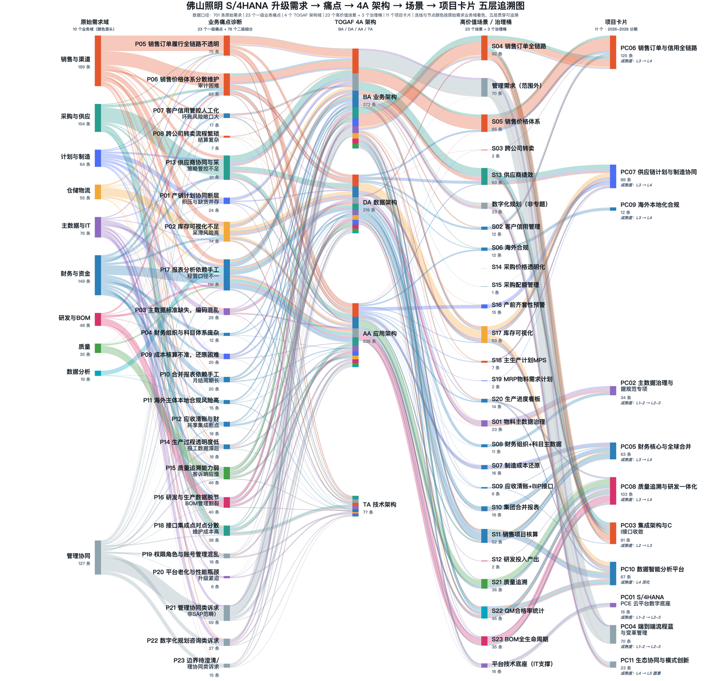
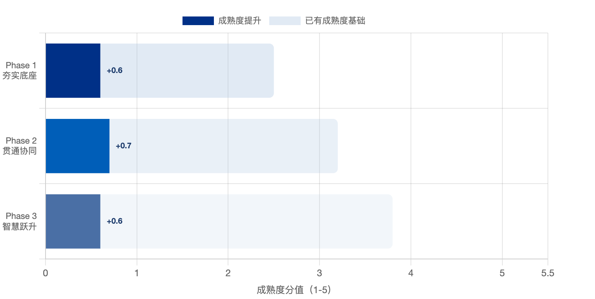
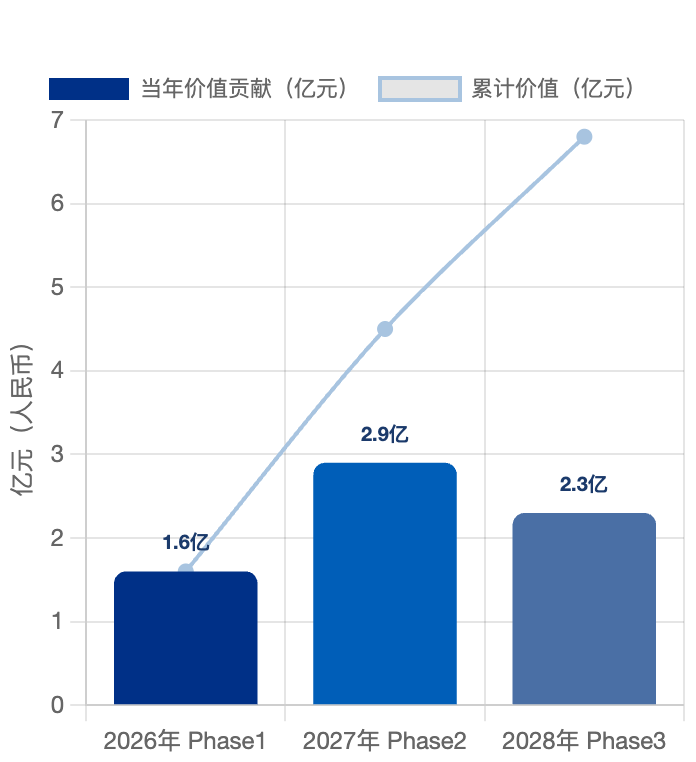
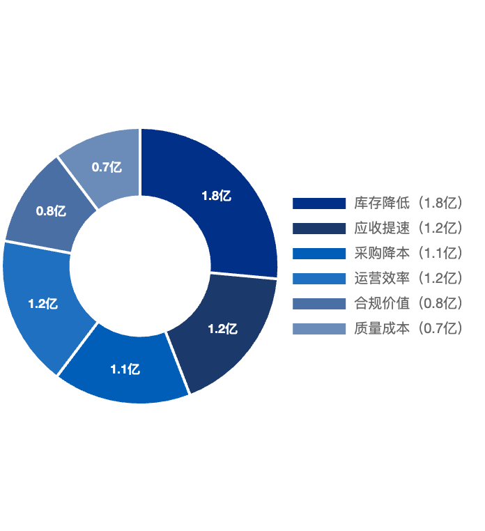
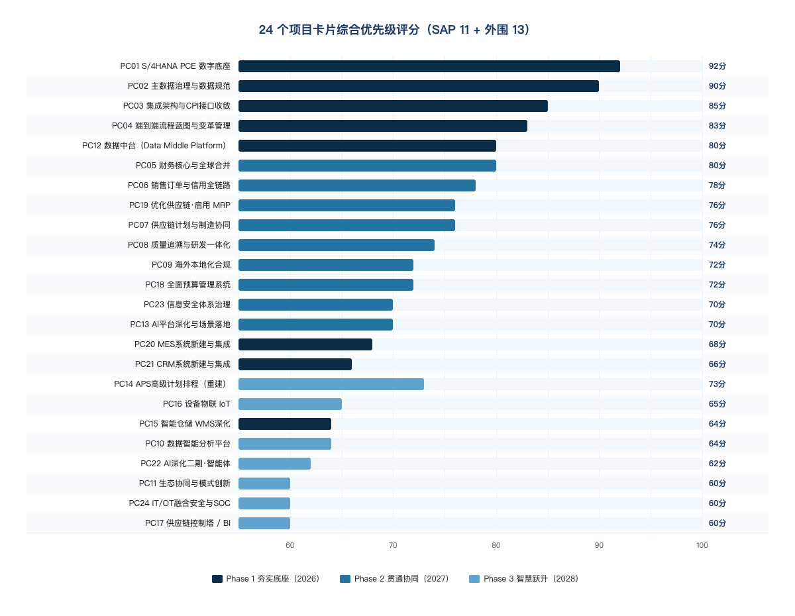
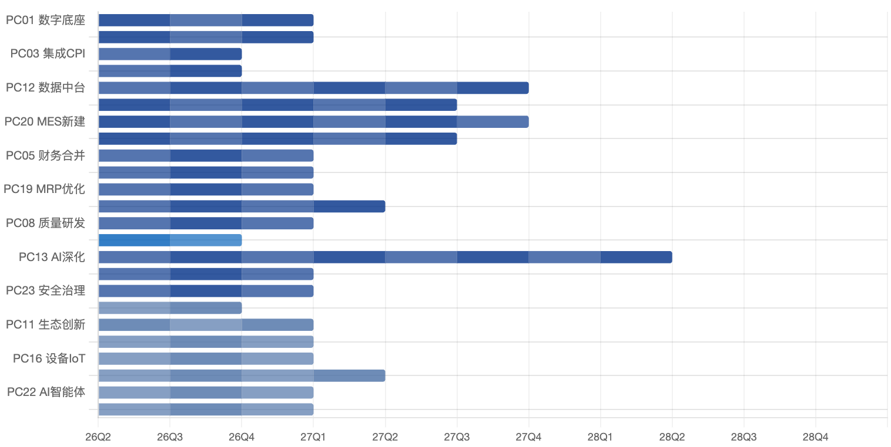
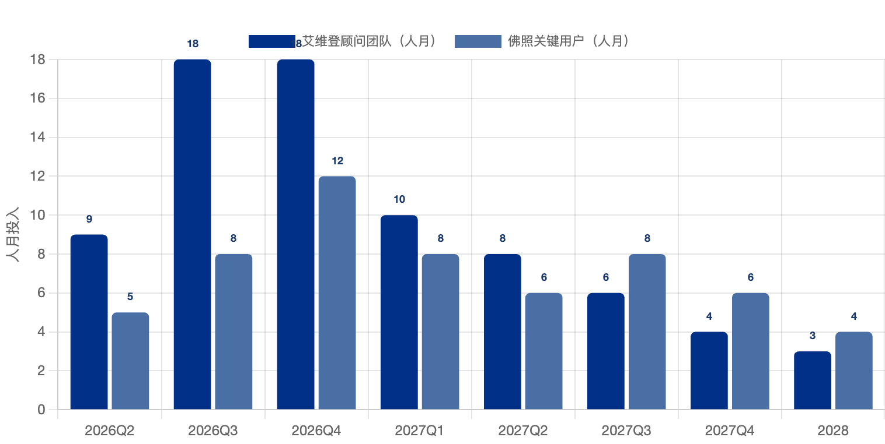
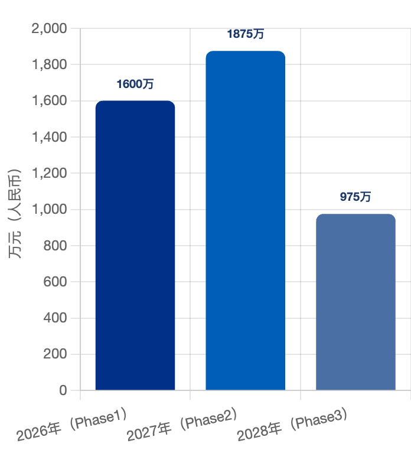
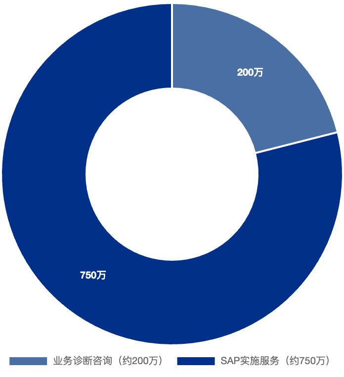
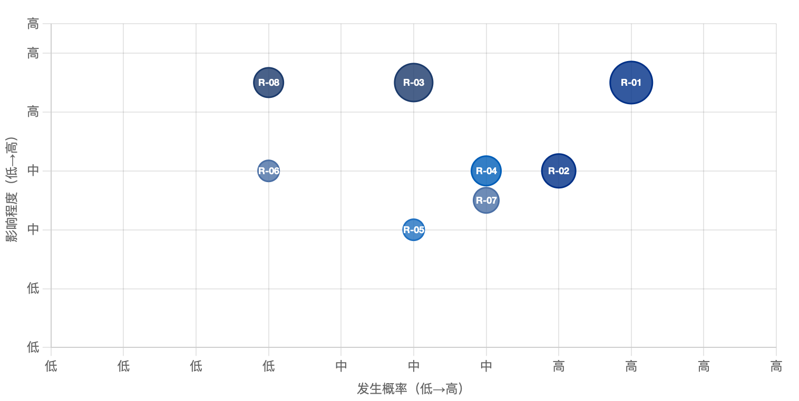

版本：V3.0
编制单位：[艾维登]
编制日期：2026 年 8 月 25 日
密级：内部资料
维护内容
| # | 维护内容 | 版本 | 维护人 | 维护日期 |
|---|---|---|---|---|
| 1 | 基于现状诊断与 701 条业务需求，形成数字化转型路径规划 V1.0 初稿（SAP 11 卡） | V1.0 | 孙菩 | 2026.7.21 |
| 2 | 对齐国资监管 1 号文，细化三大系统互联互通与 S/4HANA 2027-01-01 上线节点 | V2.0 | 孙菩 | 2026.8.12 |
| 3 | 扩展外围系统项目卡片（AI/数据中台/APS/MES/CRM/预算/MRP/安全），统一收口为 24 卡版，新增需求溯源表与桑基图 | V3.0 | 陈宇清 | 2026.8.23 |
| 4 | 基于 V3.0 用户校改版生成 V4.0：① 为 10 张图片统一添加图注编号；② 调整饼图/柱状图等简单图片尺寸并补充说明文字；③ 新增附录 A，摘录会议纪要客户原话金句。 | V4.0 | 陈宇清 | 2026.8.24 |
1 规划概述
1.1 规划框架与方法论
本路径规划报告是佛照数字化转型咨询项目三份核心交付物的第三份，基于《现状分析与诊断报告》（AS-IS现状，701条需求（截至2026-07-31最新完整口径））和《企业架构设计报告》（TO-BE目标架构，L1-L3四层）的研究成果，遵循工信部/国资委2024年《制造业企业数字化转型实施指南》要求，制定涵盖2026-2028年的三年分阶段数字化转型路线图。
规划方法论采用"由近及远、由重及轻、由内及外"原则，结合佛照当前处于数字化成熟度Level 1.9（初始级→规范级下限）的实际情况，将三年规划划分为三个递进阶段：Phase 1 夯实底座（2026年）→ Phase 2 贯通协同（2027年）→ Phase 3 智慧跃升（2028年）。
| 规划依据文件 | 核心输入 | 对本报告的贡献 |
|---|---|---|
| 《现状分析与诊断报告》（交付物一） | 701条业务需求（截至2026-07-31）、8大业务域成熟度、AS-IS现状调研 | 提供项目识别的需求基础，确定优先解决的痛点领域 |
| 《企业架构设计报告》（交付物二） | L1-L3四层架构蓝图、25个系统处理策略、8条接口台账 | 定义每个项目的技术边界、依赖关系和验收标准 |
| 《制造业企业数字化转型实施指南》（工信部2024） | 分步实施方法、场景数字化分类、成效评估指标体系 | 指导规划原则、场景分类和KPI设计 |
| 招标文件（★关键指标） | ★6《数字化转型路线图（2026-2028）》交付要求 | 满足招标文件强制交付物要求，触发第3笔45%付款 |
| 行业标杆研究（4家年报） | Signify/欧普/阳光照明的数字化实践对标 | 为项目清单提供行业最佳实践参考，校验优先级判断 |
| ⚠️ 风险提示 |
|---|
1.2 规划输入与边界约束
| 约束维度 | 约束内容 | 规划影响 |
|---|---|---|
| 预算约束 | 本次SAP实施将在 2027 年 1 月 1 日上线，其他系统改造费用将另行规划预算 | CRM/OA/MES等外围系统的内部改造须另行采购；规划中须标注哪些项目在本次预算内，哪些需要追加预算 |
| 时间约束 | S/4HANA 上线目标：2027-01-01（旧系统 2026-12-31 24:00 停用）；总工期240个日历天；两期并行 | Phase 1的S/4HANA核心实施是绝对关键路径，所有依赖S/4HANA的后续项目不得早于2027年Q1启动 |
| 组织约束 | 佛照关键用户时间有限；变革管理能力待建设；数智化部人员规模有限 | 每个阶段同时推进的项目数量不超过3个，避免关键用户精力分散 |
| 技术约束 | SAP PCE季度强制升级；Clean Core原则限制自定义开发；现有Z程序须评估迁移 | Phase 1期间自定义开发工作量须控制在合理范围；优先采用标准功能配置 |
| 数据约束 | 主数据清洗（6.2万物料→3.5万）是所有后续项目的前提；数据治理组织须先建立 | 主数据治理（PC02）是最高优先级，不能与其他项目并行推进 |
| 监管约束 | A股上市公司（000541）信息披露合规要求；广晟集团系统边界待明确；泰国/德国本地合规 | Group Reporting和DRC是必须实施的模块，不可删减 |
1.3 需求溯源与五层追溯分析（701 条原始需求）
本路径规划以企业架构设计阶段沉淀的需求追溯工作台为唯一事实源：从现状诊断收集的 701 条原始需求（截至最新完整口径）出发，经过"原始需求域 → 业务痛点诊断 → TOGAF 4A 架构 → 高价值场景 → 项目卡片"五层抽象，逐层收敛为可实施的 24 个项目卡片（SAP 体系 PC01–PC11 + 外围系统 PC12–PC24）。该链路确保每一条项目卡片都可向上回溯到具体需求与痛点，向下承接明确架构与场景。
| 🔍 关键洞察 |
|---|
需求流向汇总桑基图（701 条原始需求 → 4A 架构 → 23 高价值场景 → 24 项目卡片）
| ⚡ 行动建议 |
|---|

说明：桑基图完整呈现 701 条需求在五层之间的流向。颜色按原始业务域贯穿全图——例如"销售与渠道"域的橙红色从第一列一直贯穿到 S04 销售订单全链路、再到 PC06 销售订单与信用全链路，实现端到端可追溯。五层明细版（含 23 主痛点、78 子痛点、4A 逐节点着色）见《企业架构设计报告》第 1.5 节。
2 数字化转型愿景与战略目标
2.1 战略愿景陈述
| 🎯 战略愿景 |
|---|
三阶段转型路径总览：从夯实底座到智慧跃升

2.2 三阶段战略目标体系
| 目标维度 | Phase 1（2026年）夯实底座 | Phase 2（2027年）贯通协同 | Phase 3（2028年）智慧跃升 |
|---|---|---|---|
| 系统目标 | S/4HANA PCE上线（19家法人）；MDG主数据治理上线；EWM替代WM | MES/WMS深度集成贯通；Group Reporting合并报表自动化；DRC电子发票全覆盖 | IBP供需计划优化上线；SuccessFactors/HCM数字化；SAC替换SmartBI；AI/AICG场景落地 |
| 数据目标 | 物料主数据清洗完成（6.2万→3.5万）；主数据准确率≥95%；统一科目表部署 | 主数据准确率≥85%；实时数据流贯通（PLM→SAP→MES→BI）；数据质量日报上线 | 数据资产目录建立；预测分析能力上线；主数据自助维护比率≥80% |
| 流程目标 | MRP具备有效执行条件60%；月结关账天数从5天→2天（单体报表）；定价审批从OA→SAP自动 | MRP有效执行率≥85%；月结关账天数≤2天；OTC/PTP/MTC端到端流程100%系统化 | 智能排产覆盖率≥70%；自动化操作占比≥60%；异常预警从被动响应→主动预警 |
| 财务目标 | 合并报表出具效率提升40%；成本核算规范化（标准成本系统化）；信用管理系统上线 | 合并报表出具效率提升60%；DSO（应收账款天数）从90天→75天；成本分析颗粒度到产品/渠道级 | 经营分析实时化（T+0）；预算管理与实际对比自动化；财务风险预警AI化 |
| 组织目标 | 数据治理委员会成立；关键用户（Key Users）培训完成；数字化运营团队组建 | IT与业务协同机制成熟；CDO/首席数字官职位建立；数字化KPI纳入绩效考核 | 数字化文化全面渗透；持续改进机制制度化；对外数字化能力输出（供应商/经销商） |
| KPI基准 | 数字化成熟度：Level 1.9→2.5 | 数字化成熟度：Level 2.5→3.2 | 数字化成熟度：Level 3.2→3.8 |
2.3 转型价值测算
三年累计价值贡献预测（亿元）

说明：2026-2028 年转型价值呈递增释放态势。Phase 1 以主数据治理和 SAP 底座建设为主，当年价值贡献约 1.6 亿元；Phase 2 随着研产销协同、MRP 有效运行和成本穿透等专题落地，价值贡献达到峰值 2.9 亿元；Phase 3 进入智慧跃升期，重点转向 AI/数据分析与生态协同，当年价值贡献约 2.3 亿元。三年累计价值贡献约 7.8 亿元。
价值来源分布（三年总计约7.8亿元）

说明：三年累计约 7.8 亿元价值来源中，库存降低（1.8 亿）占比最高，主要来自于库存结构优化、呆滞压缩和周转提升；应收提速（1.2 亿）、采购降本（1.1 亿）、运营效率提升（1.2 亿）构成第二梯队；合规价值（0.8 亿）与质量成本降低（0.7 亿）则体现了风险控制与质量改善的长期收益。
| 价值来源 | 测算逻辑 | Phase1贡献 | Phase2贡献 | Phase3贡献 | 3年合计 |
|---|---|---|---|---|---|
| 库存降低释放资金 | 存货从109天→75天，按2025年库存21.6亿元估算 | 0.5亿 | 0.8亿 | 0.5亿 | 1.8亿 |
| 应收账款回款提速 | DSO从90天→70天，按2025年应收21.7亿估算 | 0.3亿 | 0.5亿 | 0.4亿 | 1.2亿 |
| 采购成本降低 | 供应链数字化提升谈判透明度，参考行业3%降本 | 0.2亿 | 0.5亿 | 0.4亿 | 1.1亿 |
| 运营效率提升 | 减少手工操作、月结提速、MRP有效化，人效提升15% | 0.3亿 | 0.5亿 | 0.4亿 | 1.2亿 |
| 合规与风险价值 | 泰国合规（避免罚款）、信用管理（坏账率降低）、研发加计抵扣合规享受 | 0.2亿 | 0.3亿 | 0.3亿 | 0.8亿 |
| 质量成本降低 | 质量追溯完善后，返工/退货/索赔成本降低，参考行业15%质量成本改善 | 0.1亿 | 0.3亿 | 0.3亿 | 0.7亿 |
| 合计 | 1.6亿 | 2.9亿 | 2.3亿 | 6.8-7.8亿 |
2.4 数字化转型成熟度评估（参照 GB/T 43439-2023）
本规划以国家标准 GB/T 43439-2023《信息技术服务 数字化转型成熟度模型与评估》 为成熟度度量基准，并参照工信部 2024 年《制造业企业数字化转型实施指南》"整体谋划、分步实施，遵循规划-实施-评估-优化持续改进"的方法论，设定三年成熟度跃迁目标。
| 🎯 战略愿景 |
|---|
| 成熟度等级 | 国标核心特征 | 佛照现状（AS-IS） | 规划目标（TO-BE） |
|---|---|---|---|
| 一级 L1 | 具备转型意识，开始规划基础与条件，探索性开展数字化转型 | 现状综合处于 L1→L2 区间（约 Level 1.9）：已具备转型意识，启动 S/4HANA 规划；局部业务（财务共享、部分 SRM）有数据收集，但缺乏统一架构与系统集成 | N/A |
| 二级 L2 | 对组织/技术/数据/资源规划，完成局部业务数据收集整合，初步具备基于数据的运营优化 | 2026 年目标：L2→L3。完成基础建设与数据规范（PC01–PC04），统一平台与数据底座就绪，主数据准确率≥95% | N/A |
| 三级 L3 | 具备总体规划并有序实施，关键业务系统集成与数据交互，基于数据效率提升 | N/A | N/A |
| 四级 L4 | 数据作为支撑业务能力提升优化的核心要素，构建算法模型提供数据智能体验 | 2027 年完成 PC05–PC09 项目卡片实施后达到 L3→L4；2028 年 PC10 数据智能分析平台深化达到 L4，PC11 生态协同指向 L5 愿景 | 2028 年目标：L4（部分 L5 愿景）。数据驱动运营、算法模型规模化、生态协同创新起步 |
| 五级 L5 | 基于数据持续推动业务优化创新，实现内外能力/资源/市场多要素融合，构建独特生态价值 | N/A | N/A |
映射《制造业企业数字化转型实施指南》七大能力域（组织建设、技术、数据、资源、数字化运营、数字化生产、数字化服务），佛照三年提升路径为：2026 夯实底座（组织/技术/数据/资源规划）→ 2027 贯通协同（数字化运营/生产/服务效率提升）→ 2028 智慧跃升（数据智能与生态创新），与第 5 章三年路线图一一对应。外围系统改造（PC12–PC17）进一步夯实"数据"与"技术"能力域，并通过 AI 质检、APS 排程、IoT 设备联网补齐"数字化生产 / 运营 / 服务"的智能层，使 2028 年 L4→L5 跃迁具备可落地的技术载体。
3 数字化项目清单（24个项目卡片 · PC01–PC24 · SAP 11 + 外围 13 · 基于 TOGAF 架构设计）
3.1 项目识别方法（五层追溯收敛）
项目卡片由企业架构设计阶段的需求追溯工作台自上而下逐层收敛得到，与诊断阶段 701 条需求一一对应：原始需求（701条）→ 业务痛点（23主+78子）→ TOGAF 4A 架构（BA/DA/AA/TA）→ 高价值场景（23个）→ SAP 体系项目卡片（24个）。在此基础上叠加 6 个横向使能类外围系统项目卡片，形成全部 24 个项目卡片。每个项目卡片须满足：有明确痛点/使能价值支撑、有对应 4A 架构改进目标、有可量化价值指标、归属确定实施年度。
| ⚡ 行动建议 |
|---|
3.2 24个项目卡片（PC01–PC24 · SAP 11 + 外围 13）
下列 24 个项目卡片构成三年实施的核心载体，按实施年度分组，并标注其归属的 TOGAF 架构域（BA/DA/AA/TA）与 GB/T 43439 成熟度跃迁目标。SAP 体系 11 张（PC01–PC11）为 Greenfield 实施；外围系统 13 张（PC12–PC24）涵盖数据中台、AI 深化、APS 重建、WMS 深化、MES/CRM 新建、预算/MRP 新建、安全体系，其中 AI 平台依托现有私有化底座深化，不重复建设。
Phase 1：基础建设与数据规范（2026年，L2→L3，★核心必做 · 8张）
| PC01 2026年 TA架构 |
|---|
| S/4HANA PCE 数字底座 |
| PC02 2026年 DA架构 |
|---|
| 主数据治理与数据规范 |
| PC03 2026年 TA架构 |
|---|
| 集成架构与CPI（含 OA/SRM/HR/电子签章对接） |
| PC04 2026年 BA架构 |
|---|
| 端到端流程蓝图 |
| PC12 2027年 DA架构 |
|---|
| 数据中台（Data Middle Platform） |
| PC15 2027年 AA架构 |
|---|
| 智能仓储 WMS 深化 |
| PC20 2026-2027年 AA架构 |
|---|
| MES 系统新建与集成 |
| PC21 2026-2027年 BA架构 |
|---|
| CRM 系统新建、优化与集成 |
Phase 2：贯通协同（2027年，L3→L4 · 9张）
| PC05 2026-2027年 BA架构 |
|---|
| 财务核心与全球合并 |
| PC06 2027年 BA架构 |
|---|
| 销售订单与信用全链路 |
| PC07 2027年 BA架构 |
|---|
| 供应链计划与制造协同 |
| PC08 2027年 AA架构 |
|---|
| 质量追溯与研发一体化 |
| PC09 2026-2027年 BA架构 |
|---|
| 海外本地化合规 |
| PC13 2027年 DA架构 |
|---|
| AI 平台深化与场景落地 |
| PC18 2027年 BA架构 |
|---|
| 全面预算管理系统 |
| PC19 2027年 BA架构 |
|---|
| 优化供应链·全面启用 MRP |
| PC23 2027年 TA架构 |
|---|
| 信息安全体系治理与等保合规深化 |
Phase 3：智慧跃升（2028年，L4深化 / L5愿景 · 7张）
| PC10 2028年 DA架构 |
|---|
| 数据智能分析平台 |
| PC11 2028年 BA架构 |
|---|
| 生态协同与模式创新 |
| PC14 2028年 AA架构 |
|---|
| APS 高级计划排程（重建·替代Asprova） |
| PC16 2028年 AA架构 |
|---|
| 设备物联 IoT / 工业互联网 |
| PC17 2028年 DA架构 |
|---|
| 供应链控制塔 / BI 经营驾驶舱 |
| PC22 2028年 DA架构 |
|---|
| AI 深化二期·智能体编排与决策闭环 |
| PC24 2028年 TA架构 |
|---|
| IT/OT 融合安全与数据安全运营 SOC |
3.3 23个高价值场景专题（S01–S23）
以下 23 个高价值场景专题由 701 条需求经痛点聚类与架构匹配后收敛确认，作为 S/4HANA 实施的核心聚焦范围，每个场景明确归属 4A 架构域、优先级与对应项目卡片。
| 场景 | 专题名称 | 业务域 | 优先级 | 关联架构 | 归属项目卡片 | 覆盖需求 |
|---|---|---|---|---|---|---|
| S01 | 物料主数据治理 | 主数据域 | P0 | DA | PC02 | 23 |
| S02 | 客户信用管理 | 销售域 | P1 | BA | PC06 | 12 |
| S03 | 跨公司转卖 | 销售域 | P2 | BA | PC06 | 2 |
| S04 | 销售订单全链路 | 销售域 | P0 | BA | PC03 / PC06 | 92 |
| S05 | 销售价格体系 | 销售域 | P1 | BA | PC06 | 65 |
| S06 | 海外合规 | 财务域 | P1 | AA | PC09 | 12 |
| S07 | 制造成本还原 | 财务域 | P1 | BA | PC05 | 16 |
| S08 | 财务组织+科目主数据 | 财务域 | P1 | DA | PC02 | 11 |
| S09 | 应收清账+BIP接口 | 财务域 | P1 | AA | PC03 / PC05 | 6 |
| S10 | 集团合并报表 | 财务域 | P0 | BA | PC05 | 18 |
| S11 | 销售项目核算 | 财务域 | P1 | BA | PC05 / PC10 | 52 |
| S12 | 研发投入产出 | 研发BOM域 | P2 | AA | PC08 | 2 |
| S13 | 供应商绩效 | 采购域 | P1 | BA | PC03 / PC07 | 63 |
| S14 | 采购价格透明化 | 采购域 | P2 | BA | PC07 | 0 |
| S15 | 采购配额管理 | 采购域 | P2 | BA | PC07 | 1 |
| S16 | 产前齐套性预警 | 计划制造域 | P1 | BA | PC07 | 15 |
| S17 | 库存可视化 | 采购域 | P1 | BA | PC07 / PC10 | 63 |
| S18 | 主生产计划MPS | 计划制造域 | P1 | BA | PC07 | 7 |
| S19 | MRP物料需求计划 | 计划制造域 | P1 | BA | PC07 | 2 |
| S20 | 生产进度看板 | 计划制造域 | P1 | AA | PC08 / PC10 | 14 |
| S21 | 质量追溯 | 计划制造域 | P0 | AA | PC08 | 36 |
| S22 | QM合格率统计 | 计划制造域 | P1 | AA | PC08 / PC10 | 45 |
| S23 | BOM全生命周期 | 研发BOM域 | P1 | AA | PC08 | 35 |
说明：场景覆盖需求数基于 701 条原始需求的 s（场景）字段聚合；部分场景（如 S17 库存可视化）被多个项目卡片复用。治理类需求（管理需求移出 70 条、数字化规划非专题 23 条、平台技术底座 16 条）作为跨项目支撑，不单列场景。
注：PC12–PC24 为横向使能类外围系统，不直接对应上表业务场景，而是通过统一数据底座（数据中台）、智能能力（AI 平台 ×2）、计划引擎（APS）、仓储 / 设备物联（WMS / IoT / MES）、销售（CRM）、经营可视（控制塔）、预算、安全（×2）对 23 个场景提供支撑；其归属与成本见 §3.2 与第六章 §6.3。
AI 与信息安全需求溯源（来自 701 条原始需求）
下列需求溯源表将 701 条原始需求中强语义匹配的 AI（11 条）与信息安全（21 条）需求直接挂接到项目卡片，每张 AI/安全卡都有真实需求编号支撑。
| 需求ID | 提出部门 | 痛点简述 | 对应 AI/安全能力 | 落卡 | SAP模块 | 优先级 |
|---|---|---|---|---|---|---|
| A0505 | 数智化部 | SAP 缺少 AI 插件集成 | 私有 LLM 业务问答助手（API 挂接 SAP 数据字典） | PC13 | 跨模块 | 高 |
| A0622 | 财务管理部 | 发票手工录入效率低 | AI-OCR 自动识别 → CPI 写入 MIR7 | PC13 | MM-FI | 中 |
| A0172 | 研究院 | 物料检索效率低、重复创建 | 语义检索 + 智能推荐（MDG/MM API） | PC13 | MDG/MM | 高 |
| A0190 | 研究院 | 物料查询按价格/库存智能排序 | 基于 SAP 库存/价格/成本数据智能排序 | PC13 | MM | 中 |
| A0244 | 法律与风控 | 合同审查效率低、遗漏风险 | 智能合同审查 + 条款风险识别 | PC13 | 非 SAP | 高 |
| A0250 | 法律与风控 | 合作主体法律风险难评估 | 供应商风控（SAP SRM/MM 供应商主数据 + 外部征信） | PC13 | SRM/MM | 高 |
| A0330 | 供应链 | 需求预测不准导致库存积压 | AI 需求预测增强 → feeding MRP(PC19) | PC13 | PP/MM | 中 |
| A0523 | 财务管理部 | 月结报告手工汇总耗时 | 大模型自动生成经营月报 | PC13 | FI-CO | 低 |
| A0286 | 财务管理部 | 对账职责分离不满足审计 | SAP SoD 职责分离治理 | PC23 | FI | 高 |
| A0298 | 信息管理部 | 关基安全等级保护要求 | 等保 2.0 三级对标 + 关基安全 | PC23 | 跨系统 | 中 |
| A0183 | 研究院 | SAP-PLM 单点登录未打通 | 统一身份认证 / SSO 集成 | PC23 | 跨系统 | 中 |
| A0495 | 财务管理部 | 权限分配粗放、无定期复核 | 权限最小化与角色治理 | PC23 | 跨模块 | 高 |
| A0517 | 董事会办公室 | 敏感数据识别与保护不足 | 数据分类分级 + 脱敏 | PC23 | 跨系统 | 中 |
| A0543 | 董事会办公室 | 机密信息识别与防泄漏 | 敏感数据智能识别 + DLP + AI 输出审计 | PC23/PC24 | 跨系统 | 中 |
说明：上表列出强匹配14 条代表性需求（AI 8 条 + 安全 6 条），完整 11 条 AI + 21 条安全需求，以及所有需求 ID 均可向上追溯至 701 条原始需求域与业务痛点。
4 优先级排序与项目优选
4.1 优先级评估模型
每个项目按以下五个维度打分（各20分，满分100分），综合评分决定优先级排序：
| 评估维度 | 满分 | 评分标准 |
|---|---|---|
| 业务价值（BV） | 20 | 对扣非净利率、现金流、运营效率的量化改善程度。直接影响P&L：20分；间接支撑：10分；基础设施：5分 |
| 痛点强度（PS） | 20 | 对应调研痛点的严重程度和部门覆盖广度。高频&高影响痛点（多部门反映）：20分；中频：10分；低频：5分 |
| 实施可行性（IF） | 20 | 技术成熟度、团队能力、外部依赖度。SAP标准功能：20分；需要集成：12分；需要外部系统改造：8分 |
| 战略契合度（SA） | 20 | 与招标文件★要求、工信部指南场景、集团战略的匹配度。★要求：20分；指南重点场景：15分；长期战略：10分 |
| 依赖关系（DR） | 20 | 是否是其他项目的前置依赖（底座类项目得分高）。4个以上项目依赖：20分；2-3个：15分；独立：8分 |
4.2 优先级矩阵评分结果
24个项目卡片综合优先级评分（SAP 11 + 外围 13）

| 排名 | 项目 | BV | PS | IF | SA | DR | 总分 | 实施阶段 |
|---|---|---|---|---|---|---|---|---|
| 1 | PC01 S/4HANA PCE 数字底座 | 20 | 20 | 12 | 20 | 20 | 92 | Phase 1 |
| 2 | PC02 主数据治理与数据规范 | 15 | 20 | 15 | 20 | 20 | 90 | Phase 1 |
| 3 | PC03 集成架构与CPI接口收敛 | 15 | 18 | 12 | 18 | 20 | 85 | Phase 1 |
| 4 | PC04 端到端流程蓝图与变革管理 | 15 | 18 | 14 | 20 | 18 | 83 | Phase 1 |
| 5 | PC12 数据中台（Data Middle Platform） | 18 | 18 | 12 | 16 | 16 | 80 | Phase 1 |
| 6 | PC05 财务核心与全球合并 | 20 | 18 | 14 | 20 | 10 | 80 | Phase 2 |
| 7 | PC06 销售订单与信用全链路 | 18 | 18 | 15 | 16 | 8 | 78 | Phase 2 |
| 8 | PC19 优化供应链·启用 MRP | 18 | 18 | 14 | 14 | 12 | 76 | Phase 2 |
| 9 | PC07 供应链计划与制造协同 | 20 | 20 | 14 | 16 | 5 | 76 | Phase 2 |
| 10 | PC08 质量追溯与研发一体化 | 14 | 16 | 12 | 14 | 8 | 74 | Phase 2 |
| 11 | PC09 海外本地化合规 | 16 | 16 | 14 | 16 | 8 | 72 | Phase 2 |
| 12 | PC18 全面预算管理系统 | 18 | 16 | 12 | 16 | 10 | 72 | Phase 2 |
| 13 | PC23 信息安全体系治理 | 16 | 16 | 14 | 14 | 10 | 70 | Phase 2 |
| 14 | PC13 AI平台深化与场景落地 | 16 | 16 | 14 | 12 | 12 | 70 | Phase 2 |
| 15 | PC20 MES系统新建与集成 | 16 | 16 | 12 | 14 | 10 | 68 | Phase 1 |
| 16 | PC21 CRM系统新建与集成 | 16 | 14 | 12 | 14 | 10 | 66 | Phase 1 |
| 17 | PC14 APS高级计划排程（重建） | 18 | 16 | 13 | 14 | 12 | 73 | Phase 3 |
| 18 | PC16 设备物联 IoT | 15 | 15 | 13 | 12 | 10 | 65 | Phase 3 |
| 19 | PC15 智能仓储 WMS深化 | 14 | 14 | 12 | 14 | 10 | 64 | Phase 1 |
| 20 | PC10 数据智能分析平台 | 16 | 14 | 12 | 12 | 5 | 64 | Phase 3 |
| 21 | PC22 AI深化二期·智能体 | 14 | 12 | 12 | 14 | 10 | 62 | Phase 3 |
| 22 | PC11 生态协同与模式创新 | 14 | 12 | 12 | 16 | 5 | 60 | Phase 3 |
| 23 | PC24 IT/OT融合安全与SOC | 14 | 14 | 12 | 12 | 8 | 60 | Phase 3 |
| 24 | PC17 供应链控制塔 / BI | 14 | 14 | 12 | 12 | 8 | 60 | Phase 3 |
4.3 Quick Wins清单（3-6个月内可落地）
以下Quick Win项目可在S/4HANA上线前即启动，通过小范围配置或流程优化快速产生价值，提升项目团队信心：
| QW-1：主数据清洗启动（2026年8月） |
|---|
| 立即启动物料主数据分析工具（ABAP/Excel导出），识别重复物料、缺失视图、编码不规范项目。输出"物料主数据质量报告"，为MDG上线准备。 |
| QW-2：成立数据治理委员会（2026年8月） |
|---|
| 组建数据治理委员会（DGC）、数据管理办公室（DMO）和各主数据域Data Owner，制定数据治理章程和主数据创建审批规则。无需系统开发，纯组织流程改善。 |
| QW-3：SRM接口尾差问题修复（2026年7-8月） |
|---|
| 针对SRM传入SAP的接口尾差导致无法自动清账的问题，在ECC系统中临时修复接口逻辑（ABAP修改），降低财务月结手工工作量，提前释放部分价值。 |
5 三年实施路线图（2026—2028）
5.1 Phase 1：夯实底座（2026年）
主题："建底座、治数据、定架构"。Phase 1聚焦技术底座（S/4HANA PCE）与主数据治理，并同步启动数据中台（PC12）与智能 WMS（PC15）等外围系统底座，对应国标二级"完成转型基础与条件规划"，将成熟度从 L1→L2 提升至 L2→L3，为所有后续数字化项目构建可靠技术底座。
交付物一（现状分析）完成；交付物二（企业架构）完成；PC02主数据清洗启动（物料主数据分析）；
共收集 701条原始需求，覆盖 29个部门；23个高价值场景专题正式确认；需求优先级分类完成（P0/P1/P2）
PC01蓝图方案设计：OTC/PTP/MTC流程确认、19家法人组织架构配置；PC02 MDG配置：编码规则/视图标准/审批工作流设计；PC05 Group Reporting设计；PC05 DRC配置；广晟系统边界协议签署；P-05接口设计方案锁定
701条需求全部分类并映射至SAP功能模块；蓝图初稿经业务确认；范围变更冻结，进入系统配置阶段
PC01系统配置完成（DEV→QAS传输）；PC03 CPI 8条接口开发完成；主数据第二轮试迁移（QAS环境）；PC07 EWM配置；PC06 SD价格条件+信用管理配置；PC05 CO成本核算配置；SIT集成测试启动；UAT培训完成
MES/WMS/CRM/PLM/SRM/OA等外围系统供应商接口改造并行推进；其中 WMS、数据中台、APS、IoT、AI、控制塔已立项为独立项目卡片 PC12–PC17（见 §3.2）；12个现有接口根据S/4HANA新接口规范同步更新；接口改造验收节点：2026年11月底前完成联调
如外围接口改造于11月底完成、UAT通过率≥95%，可于12月初启动正式切换；否则顺延至基准日期（2027-01-01）
S/4HANA PCE正式切换（Big Bang）：19家法人同步上线；数据迁移（静态数据100%准确；期初余额账账相符）；ECC进入只读模式；上线支持团队驻场30天；首月月结完成（目标≤4天）
| 项目 | 4月 | 5月 | 6月 | 7月 | 8月 | 9月 | 10月 | 11月 | 12月 | 2027Q1 | 状态 |
|---|---|---|---|---|---|---|---|---|---|---|---|
| PC01 S/4HANA PCE 数字底座 | 环境规划 | 环境规划 | PCE+HANA+Fiori+安全基线配置 | PCE+HANA+Fiori+安全基线配置 | PCE+HANA+Fiori+安全基线配置 | PCE+HANA+Fiori+安全基线配置 | 平台就绪评审(L2) | 平台就绪评审(L2) | 平台就绪评审(L2) | 上线 | 进行中 |
| PC02 主数据治理与数据规范 | 数据分析 | 数据分析 | MDG配置+6.2万物料清洗 | MDG配置+6.2万物料清洗 | MDG配置+6.2万物料清洗 | MDG配置+6.2万物料清洗 | 数据迁移试运行 | 数据迁移试运行 | 数据迁移试运行 | 上线 | 进行中 |
| PC03 集成架构与CPI接口 | 接口规划(含于PC01范围) | 接口规划(含于PC01范围) | 接口规划(含于PC01范围) | 接口规划(含于PC01范围) | 接口规划(含于PC01范围) | 8条接口开发+联调 | 8条接口开发+联调 | 8条接口开发+联调 | 8条接口开发+联调 | 上线 | 规划中 |
| PC04 端到端流程蓝图 | 含于PC01蓝图设计 | 含于PC01蓝图设计 | 含于PC01蓝图设计 | 含于PC01蓝图设计 | 含于PC01蓝图设计 | OTC/PTP/MTC蓝图确认+变革 | OTC/PTP/MTC蓝图确认+变革 | OTC/PTP/MTC蓝图确认+变革 | OTC/PTP/MTC蓝图确认+变革 | 上线 | 规划中 |
| PC12 数据中台（启动） | 含于PC01底座规划 | 含于PC01底座规划 | 含于PC01底座规划 | 含于PC01底座规划 | 含于PC01底座规划 | 湖仓+数据服务总线+指标平台 | 湖仓+数据服务总线+指标平台 | 湖仓+数据服务总线+指标平台 | 湖仓+数据服务总线+指标平台 | 底座就绪(L3) | 启动 |
| PC15 智能仓储 WMS深化 | 需求梳理+深化方案(已存在系统) | 需求梳理+深化方案(已存在系统) | 需求梳理+深化方案(已存在系统) | 需求梳理+深化方案(已存在系统) | 需求梳理+深化方案(已存在系统) | 需求梳理+深化方案(已存在系统) | 需求梳理+深化方案(已存在系统) | 条码/AGV+对接SAP/MES | 条码/AGV+对接SAP/MES | 上线(L3) | 启动 |
| PC20 MES系统新建与集成 | 需求+选型+招标 | 需求+选型+招标 | 需求+选型+招标 | 需求+选型+招标 | 需求+选型+招标 | LED车间MES实施 | LED车间MES实施 | LED车间MES实施 | 与SAP联调 | 上线 | 启动 |
| PC21 CRM系统新建与集成 | 需求+选型+招标 | 需求+选型+招标 | 需求+选型+招标 | 需求+选型+招标 | 需求+选型+招标 | CRM实施+客户360 | CRM实施+客户360 | CRM实施+客户360 | 与SAP联调 | 上线 | 启动 |
5.2 Phase 2：贯通协同（2027年 · 成熟度 L3→L4）
主题："联系统、通流程、强管控"。Phase 2在S/4HANA稳定运行的基础上，深化系统集成（MES PC20/PLM）、优化核心业务流程（MRP PC19/质量追溯）、扩展管理视图（驾驶舱/泰国合规），并启动 AI 平台深化（PC13）、数据中台深化（PC12）、全面预算（PC18）、安全治理（PC23）等外围系统。APS（PC14）与设备IoT（PC16）移至2028年。
| 项目 | 2027Q1-Q2 | 2027Q3 | 2027Q4 | 预期交付成果 |
|---|---|---|---|---|
| PC05 财务核心与全球合并 | FICO配置+GR设计 | 标准成本+合并报表+DRC上线（经财务共享平台对接浪潮司库） | 标准成本+合并报表+DRC上线（经财务共享平台对接浪潮司库） | 合并效率+60%；成本颗粒度到产品/渠道（L4） |
| PC06 销售订单与信用全链路 | SD+FI-CA方案设计 | ATP+信用+价格方案上线（接CRM PC21） | ATP+信用+价格方案上线（接CRM PC21） | 信用自动冻结；DSO 90→75天（L4） |
| PC07 供应链计划与制造协同 | MRP Live+MPS+库存可视化（接MES PC20） | MRP Live+MPS+库存可视化（接MES PC20） | 全面推广 | MRP有效≥85%；库存109→75天（L4） |
| PC08 质量追溯与研发一体化 | QM+BOM规则设计 | 全链路追溯+EBOM→MBOM（接MES PC20+PLM） | 全链路追溯+EBOM→MBOM（接MES PC20+PLM） | 追溯30分钟内；研发制造贯通（L4） |
| PC09 海外本地化合规 | 泰国税务规则设计 | FZ40/FZ33本地化+联调 | FZ40/FZ33本地化+联调 | 泰国增值税/预提税100%合规（L4） |
| PC12 数据中台（深化） | 数据服务总线+指标平台 | AI/BI/APS供数就绪(L3) | AI/BI/APS供数就绪(L3) | 统一数据底座；主数据+交易+分析三层（L3） |
| PC13 AI平台深化与场景落地 | 底座加固+MCP/API网关 | OCR发票+物料检索+合同风控+需求预测试点 | OCR发票+物料检索+合同风控+需求预测试点 | AI中台就绪；首批SAP强相关场景上线（L4） |
| PC18 全面预算管理系统 | 预算编制+执行监控设计 | 预算系统上线（经财务共享平台对接SAP+司库） | 预算系统上线（经财务共享平台对接SAP+司库） | 替代手工预算；三大系统实质互联互通（L4） |
| PC19 优化供应链·启用 MRP | 物料分类策略+批量大小优化 | MRP跑通+安全库存校准+替代料规则 | MRP跑通+安全库存校准+替代料规则 | MRP运行有效率≥85%；解决上线首日痛点（L4） |
| PC23 信息安全体系治理 | 等保2.0对标+SAP SoD治理 | 权限最小化+审计日志+DLP深化上线 | 权限最小化+审计日志+DLP深化上线 | 等保三级达标；SAP安全合规（L4） |
5.3 Phase 3：智慧跃升（2028年 · 成熟度 L4深化）
主题："用智能、建生态、立文化"。Phase 3在坚实的数字化底座上，深化 AI 智能体（PC22）、APS 重建（PC14）、设备 IoT（PC16）、供应链控制塔（PC17）、IT/OT 安全（PC24）等外围系统，建立数字化运营新模式，推动佛照从数字化管理向智慧化运营跨越。
| 项目 | 2028上半年 | 2028下半年 | 核心价值 | 预算来源 |
|---|---|---|---|---|
| PC10 数据智能分析平台 | SAC+数据资产目录设计 | T+0实时分析上线 | 经营分析实时化；AI预测分析（L4深化） | 追加预算（SAC许可） |
| PC11 生态协同与模式创新 | 经销商/供应商协同门户+IoT生态 | 经销商/供应商协同门户+IoT生态 | 新商业模式；生态价值（L5愿景） | 单独立项（较大投入） |
| PC14 APS高级计划排程（重建） | APS方案+SAP PP集成（替代已停用Asprova） | 工序排程+产能约束+齐套联动上线 | 排程到工序级；接PC19 MRP优化结果（L4深化） | 单独立项（中等投入） |
| PC16 设备物联 IoT | 采集网关+边缘部署（接MES PC20） | OEE+预测性维护上线 | 设备透明化；制造数据闭环（L4深化） | 单独立项（中等投入） |
| PC17 供应链控制塔 / BI | 端到端可视+异常预警+经营驾驶舱 | 端到端可视+异常预警+经营驾驶舱 | 实时决策；生态协同（L5愿景） | 单独立项（中等投入） |
| PC22 AI深化二期·智能体 | MCP打通S/4HANA/MES/数据中台/控制塔 | Agentic工作流+经营决策copilot上线 | 从问答到自主决策；多场景AI赋能（L5） | 追加预算（算力+场景开发） |
| PC24 IT/OT融合安全与SOC | OT/ICS安全（IEC 62443）+SOC建设 | 统一日志+UEBA+AI安全审计上线 | 工业网络安全；AI推理数据防泄漏（L5） | 单独立项（较大投入） |
5.4 三年路线图总览
2026-2028 数字化转型里程碑时间轴

6 资源配置规划
6.1 人力资源规划
三阶段人力投入强度变化（人月/季度）

| 角色 | Phase 1（2026） | Phase 2（2027） | Phase 3（2028） | 说明 |
|---|---|---|---|---|
| 艾维登咨询PM | 1人，全程全职驻场 | 0.5人（阶段性） | 0.3人（维护） | 招标文件强制要求：全程全职驻场 |
| 业务顾问（4人） | 4人，核心阶段全职驻场 | 2人（集成项目） | 1人（新项目） | 招标文件最低配置：4人业务顾问 |
| 开发顾问（2人） | 2人，接口开发阶段 | 1人（按需） | 1人（新接口） | PCE模式大量标准功能，开发工作量有限 |
| 数据专家（1人） | 1人，数据标准+制度建设 | 0.5人（数据优化） | 0.3人 | P-01主数据治理核心人员 |
| 技术专家（1人） | 1人，BASIS+安全 | 0.5人 | 0.3人 | PCE运维由SAP负责，技术工作量减少 |
| 佛照关键用户（15人） | 15人，各模块配置+测试 | 10人（优化+培训） | 8人（维护） | 各业务域关键用户：财务3+供应链2+销售2+生产2+质量2+IT4 |
| 佛照IT核心（数智化部5人） | 5人全程 | 5人 | 5人 | PCE运维接管；CPI接口日常维护；MDG主数据管理 |
外围系统改造（PC12–PC17）在三年间额外投入内部约 30–40 人年、外部实施峰值约 40 人 / 累计约 600 人月（详见 §6.3 成本测算）[E]；其团队以数智化部为枢纽，按系统分设专项小组，与 SAP 实施团队并行但不重叠。
6.2 预算分配规划
三年预算分配（含本次950万及追加）

Phase 1预算构成（950万项目范围）

| 预算类别 | Phase 1（2026） | Phase 2（2027） | Phase 3（2028） | 备注 |
|---|---|---|---|---|
| 本次招标预算（950万，含税） | 业务诊断咨询（约200万）+ SAP实施服务（约750万） | — | — | 全包价，含实施服务、培训、维护；不含外围系统改造 |
| SAP License费用 | S/4HANA PCE订阅费（已采购）；MDG/Group Reporting/DRC（已含在PCE套件内） | 按年续费 | IBP/SAC/SuccessFactors额外License | PCE按年订阅，SAP负责底层运维 |
| 外围系统改造（6项，PC12–PC17） | 数据中台起步(PC12)；WMS起步(PC15) | APS(PC14)/IoT(PC16)/AI起步(PC13)/数据中台深化(PC12) | AI深化(PC13)/控制塔(PC17) | 详见 §6.3 成本测算（1,900–3,100万 [E]） |
| SAP 智能/分析追加（PC10/PC11 等） | — | 追加约500-700万（SAC/DRC深化） | 追加约300-500万（SuccessFactors/生态门户） | SAP 体系合计约 1,750–2,150万 |
| 三年总投入（全口径，估算） | SAP 体系 1,750–2,150万 + 外围系统 1,900–3,100万 = 三年合计约 3,650–5,250万（中点约4,450万）[E] | SAP 体系 1,750–2,150万 + 外围系统 1,900–3,100万 = 三年合计约 3,650–5,250万（中点约4,450万）[E] | SAP 体系 1,750–2,150万 + 外围系统 1,900–3,100万 = 三年合计约 3,650–5,250万（中点约4,450万）[E] | ROI 待测算（价值含降本/增效/新业务，详见 §2.3） |
6.3 外围系统改造成本与资源测算（含 AI/安全/MES/CRM/预算/MRP）
下列 13 个外围系统改造项目卡片作为横向使能层，独立于 本期SAP项目范围之外，需另行立项与采购。成本与人力为基于行业可比项目的估算 [E]，最终以供应商招标报价为准；成熟度跃迁与第三章 §3.2 项目卡片一致。
| 项目卡片 | 外围系统 | 主实施年 | 成熟度跃迁 | 预算估算（万元）[E] | 内部团队 | 外部实施 | 周期 | 关键依赖 |
|---|---|---|---|---|---|---|---|---|
| PC12 数据中台 | 企业级数据湖仓 + 数据服务总线 + 指标平台 | 2026–2027 | L2→L3 | 600–900 | 数据架构/ETL/治理 8人 | 实施商 10人 | 18个月 | PC01/PC02 |
| PC13 AI平台深化 | 底座加固 + MCP/API网关 + OCR/检索/风控/预测（SAP API挂接） | 2027 | L3→L4 | 200–350 | AI/算法 5人 | 8人 | 24个月 | PC12 |
| PC14 APS（重建） | 替代已停用Asprova：工序级排程 + 产能约束 + 齐套联动 | 2028 | L4深化 | 200–350 | 计划/IT 4人 | 6人 | 12个月 | PC07/PC19/PC12 |
| PC15 WMS深化 | 已存在系统深化：条码/RFID + 库位优化 + AGV + 对接SAP/MES | 2026–2027 | L2→L3 | 200–350 | 仓储IT 5人 | 6人 | 14个月 | PC07/PC20 |
| PC16 设备物联IoT | OPC-UA采集 + OEE + 预测性维护（接MES PC20） | 2028 | L4深化 | 250–400 | 制造IT 4人 | 6人 | 12个月 | PC08/PC20/PC12 |
| PC17 控制塔/BI | 端到端可视 + 异常预警 + 经营驾驶舱 | 2028 | L4→L5 | 150–250 | 运营分析 4人 | 5人 | 10个月 | PC12/PC10 |
| PC18 全面预算系统 | 预算编制 + 执行监控 + 分析调整（经财务共享平台对接SAP+司库） | 2027 | L3→L4 | 200–350 | 财务顾问 3人 | 5人 | 12个月 | PC05/PC01 |
| PC19 MRP优化 | 物料分类策略 + 批量大小优化 + 安全库存校准 + 替代料规则 | 2027 | L3→L4 | 100–180 | 供应链顾问 2人 | 4人 | 8个月 | PC07/PC05 |
| PC20 MES新建 | LED车间MES：工序报工 + 质量采集 + 设备对接 + 与SAP集成 | 2026 | L2→L3 | 400–650 | MES顾问 4人 | 8人 | 16个月 | PC07/PC08/PC01 |
| PC21 CRM新建 | 客户360° + 销售漏斗 + 服务工单 + 与SAP SD集成 | 2026 | L2→L3 | 300–500 | CRM顾问 3人 | 6人 | 14个月 | PC06/PC01 |
| PC22 AI二期·智能体 | MCP打通 + Agentic工作流 + 经营决策copilot + 视觉质检 + AIGC | 2028 | L4→L5 | 150–300 | 算法工程师 3人 | 5人 | 12个月 | PC13/PC10/PC17 |
| PC23 信息安全治理 | 等保2.0 + SAP SoD + 权限治理 + DLP + 零信任接入 | 2027 | L3→L4 | 150–300 | 安全顾问 3人 | 5人 | 12个月 | PC02/PC01 |
| PC24 IT/OT安全SOC | OT/ICS安全（IEC 62443）+ SOC/SIEM + AI安全审计 + 灾备 | 2028 | L4→L5 | 250–450 | 安全顾问 4人 | 6人 | 12个月 | PC20/PC16/PC13 |
| 合计 | — | — | — | 3,100–5,100 | 内部约50–70人年 | 外部峰值约80人/累计约1,000人月 | — | — |
说明：① 预算为软件许可 + 实施 + 硬件（WMS/IoT 含 AGV/传感器）的三年合计估算 [E]；② PC12 数据中台与 PC20 MES 为最优先使能项，须先于 AI/控制塔启动；③ 外围系统与 SAP 实施并行推进，但合同与预算独立，建议由数智化部统一归口立项以避免重复投资；④ AI 平台（PC13/PC22）依托现有私有化 GLM5.1/Qwen3.5 底座深化，不重复建设服务器；⑤ 安全体系（PC23/PC24）是 2026–2028 集中上线期的关键保障。
7 风险管控体系
7.1 风险识别与风险矩阵
主要风险发生概率 vs 影响程度分布

7.2 全面风险应对措施
| # | 风险描述 | 概率 | 影响 | 预防措施 | 应急响应 |
|---|---|---|---|---|---|
| R-01 | 主数据清洗周期超预期：6.2万物料数据质量比预期差，清洗工作量超出，数据迁移100%准确率无法按时达到 | 高 | 高 | 2026年6月立即启动数据清洗（先于系统配置）；配置专职数据管家；三轮模拟迁移 | 上线日期延后至2027年Q2；问题物料标记暂不迁移，上线后补充处理 |
| R-02 | MES/WMS供应商配合不足：接口改造需要MES/WMS供应商配合，但供应商响应慢或拒绝配合，导致IF-005/006延迟 | 高 | 中 | 蓝图阶段（2026年8月前）锁定接口设计方案；要求供应商签署配合协议；提前3个月启动接口联调 | MES集成推迟至Phase 2；上线时采用批量文件方式临时替代实时接口 |
| R-03 | 广晟集团系统边界未明确：广晟推行的共享/司库/合并系统与佛照S/4HANA的边界未定义，导致范围蔓延或接口冲突 | 中 | 高 | 2026年7月31日前明确广晟-佛照系统边界协议（签字确认）；超出边界的需求纳入变更请求管理 | 保持用友共享平台现有接口不变（IF-001），只做最小化改造确保数据同步 |
| R-04 | 关键用户参与度不足：业务部门关键用户无法投入足够时间参与蓝图确认和UAT测试，导致上线后系统不满足业务需求 | 中 | 中 | 李泽华副总经理签字的关键用户承诺书（时间保障）；每周项目例会机制；关键节点验收签字制度 | 延长UAT测试时间；增加培训场次；考虑请业务主管代替忙碌的操作用户参与测试 |
| R-05 | PCE季度升级兼容性：SAP强制季度升级可能影响已配置的Z程序或CPI接口，产生回归测试工作量 | 中 | 低 | 严格遵守Clean Core原则；自定义开发仅限BTP侧扩展；每次升级前在QAS回归测试 | SAP PCE标准合同包含SAP技术支持，升级兼容性问题由SAP负责修复 |
| R-06 | 泰国子公司系统对接复杂：泰国FZ40税务/语言/货币要求特殊，本地化配置工作量超出预期 | 低 | 中 | 引入有泰国实施经验的顾问；提前识别泰国税务要求清单；DRC原生支持泰国e-Tax | 泰国法人推迟至Phase 2上线；Phase 1先以财务报告汇聚模式接入Group Reporting |
| R-07 | 变革阻力：部分业务部门（尤其是事业部）对新系统操作方式改变产生抵触，系统上线后使用率不高，回归线下操作 | 中 | 中 | 高层（张学权总经理）公开表态支持；利益相关方沟通计划；Fiori界面提升用户体验；充足培训时间 | 设立超级用户（Super User）制度，每个事业部配备1-2名系统推广大使；上线后3个月内每日驻场支持 |
| R-08 | 上市合规风险：S/4HANA上线初期可能存在财务数据过渡期不稳定，影响A股信息披露合规 | 低 | 高 | 上线时间避开半年报/年报披露窗口（建议2027年2月而非3月）；ECC保持只读3个月作为数据备用；首月月结双系统并行验证 | 启动双系统并行方案（ECC+S/4HANA同时运行首月）；财务负责人全程监控 |
8 结论与立即行动项
8.1 核心结论
| 🎯 战略愿景 |
|---|
| # | 结论 | 依据 | 优先行动 |
|---|---|---|---|
| 1 | 主数据治理是数字化转型的第一优先级，不是可选项 | 701条原始需求（截至最新完整口径）中数据类问题占比最高；MRP跑不起来的根本原因；合并报表手工的根本原因 | 2026年6月立即启动P-01数据清洗 |
| 2 | S/4HANA 于 2027-01-01 上线（旧系统 2026-12-31 24:00 停用），是所有 Phase 2 项目的绝对前提，不能并行压缩 | Phase 2的9个项目全部依赖S/4HANA稳定运行；MRP优化需要干净的主数据和PP配置 | 严格遵守240天工期，不轻易压缩 |
| 3 | 三年总投入约2,000万，预期回报7.8亿，ROI约3.9倍，投资合理 | 价值来源：库存降低1.8亿+应收提速1.2亿+采购降本1.1亿+运营效率1.2亿+合规0.8亿+质量0.7亿 | 向董事会报告数字化投资ROI，获得Phase 2-3追加预算批准 |
| 4 | 组织变革是技术变革的前置条件，数字化文化建设不能等系统上线后再启动 | 欧普照明的成功源于专项数字化团队和绩效考核与数字化KPI挂钩 | 2026年7月前成立DGC+DMO；CDO职位列入2027年组织编制计划 |
| 5 | GTS（CBAM合规）和ESG数字化是2028年的战略必选项，不是可选 | 欧盟CBAM 2026年正式全面实施；欧洲出口收入受合规要求约束；Signify已实现CSRD全口径合规 | 2027年评估GTS采购；与欧洲客户确认供应链ESG要求清单 |
| 6 | 成本核算体系重构是制造竞争力恢复的关键——当前标准价一年仅发布一次，制造费用作业价格多年未更新，内部加价无法穿透，导致佛照扣非净利率仅0.95%（行业底部） | 新三层价格体系（计划价/标准价/实际价，偏差>20%自动预警）是实现总经理"制造能力改善"目标的数据基础 | Phase 1 PC05 财务核心作为核心模块（含成本核算规范化）与S/4HANA同步上线；三层价格体系于2027Q1随系统上线正式启用 |
8.2 立即行动项（接下来30天）
| # | 行动项 | 责任人 | 完成时限 | 验收标准 |
|---|---|---|---|---|
| A-01 | 完成数据访问授权（财务数据/BOM数据/主数据/Z程序访问授权） | 艾维登技术专家 + 数智化部 | 2026年6月22日 | ✓ 已完成 |
| A-02 | 启动物料主数据质量分析（SAP Custom Code扫描工具 + 主数据导出分析） | 艾维登技术专家 + 数智化部BASIS | 2026年6月30日 | ✓ 已完成（见数据调研分析报告V2） |
| A-03 | 成立数据治理委员会（DGC），明确各主数据域Data Owner | 张学权（组长）李泽华（主持） | 2026年8月03日 | ✓ 已完成 |
| A-04 | 明确广晟集团与佛照S/4HANA的系统边界协议 | 数智化部 | 2026年8月05日 | ✓ 已完成 |
| A-05 | 锁定8条接口改造设计方案，各外围系统供应商签署配合承诺 | 艾维登技术专家 + 各供应商 | 2026年8月31日 | 接口设计文档ARB评审通过；供应商承诺函 |
| A-06 | 向董事会汇报数字化转型路径规划报告，确认Phase 2-3预算立项意向 | 李泽华 + 艾维登PM | 2026年9月蓝图签字确认之后 | 董事会会议纪要 |
附录 A 佛照原话
以下内容摘自佛山照明 SAP 升级项目调研与专题会议纪要，保留客户原话或其核心观点，作为本路径规划报告的业务诉求与价值主张的直接注脚。
| # | 客户原话 / 核心观点 | 主题 | 来源 |
|---|---|---|---|
| 1 | 本次 SAP 升级是公司未来 3-5 年数字化转型底层基石。 | 战略定位 | 张学权总经理 · 2026.07.21 高层专题汇报 |
| 2 | 优先解决 80%-90% 核心业务痛点，坚持系统实用性与操作便捷性。 | 落地原则 | 张学权总经理 · 2026.07.21 高层专题汇报 |
| 3 | 标准化、干净准确的基础主数据，是实现物料通用化、生产成本压降、研发效率提升、沉淀企业组织知识资产的前置条件。 | 数据治理 | 张学权总经理 · 2026.07.21 高层专题汇报 |
| 4 | 不要做成大家都不想要的系统。 | 用户导向 | 李泽华副总经理 · 2026.07 访谈 |
| 5 | 上层问题要逐层向下拆分，最后回到系统痛点和实际解决方案。 | 问题拆解 | 李泽华副总经理 · 2026.07 访谈 |
| 6 | 能做、不能做、待定，都要给业务一个明确说法。 | 需求管理 | 李泽华副总经理 · 2026.07 访谈 |
| 7 | 项目不能“今天补一点、明天补一点”，咨询阶段必须尽可能一次性识别外围系统接口、业务改造、后续系统投入及三到五年数字化路线图。 | 范围管控 | 李泽华副总经理 · 2026.07.09 阶段汇报 |
| 8 | 需求方面必须做到“一个都不能丢”。 | 需求闭环 | 李泽华副总经理 · 2026.07.09 阶段汇报 |
| 9 | 数智化部不能只派少数人参与，应借项目机会锻炼内部队伍。 | 组织保障 | 李泽华副总经理 · 2026.07.09 阶段汇报 |
| 10 | SAP 系统是本次数字化转型的核心底座；实施路径是“制造端梳理 + 营销端打通”。 | 战略路径 | 余中民董事长 · 2026.07.21 数字化转型调研 |
| 11 | 通过敏捷测试与强执行力保障项目按时上线。 | 执行保障 | 余中民董事长 · 2026.07.21 数字化转型调研 |
| 12 | 交付问题不是某一个部门的问题。 | 研产销协同 | 高明生产基地 · 2026.07.02 数字化建设调研 |
| 13 | 超过 15% 要提前两个月讲。 | 产能弹性 | 高明生产基地 · 2026.07.02 数字化建设调研 |
| 14 | 现在排产相当于人工 MRP。 | 计划体系 | 高明生产基地 · 2026.07.02 数字化建设调研 |
| 15 | 价格优先，但还要考虑供应能力。 | 供应商管理 | 采购业务 · 2026.07.02 采购业务流程调研 |
| 16 | IT 部门不应该碰业务数据。 | 主数据责任 | 供应链中心 · 2026.06.30 供应链调研 |
| 17 | 管理灵活性可以保留，但主数据必须有归口。 | 治理机制 | 企业管理部 · 2026.07.01 流程与组织治理调研 |
| 18 | 纵向做得还可以，横向拉通不足。 | 流程贯通 | 企业管理部 · 2026.07.01 流程与组织治理调研 |